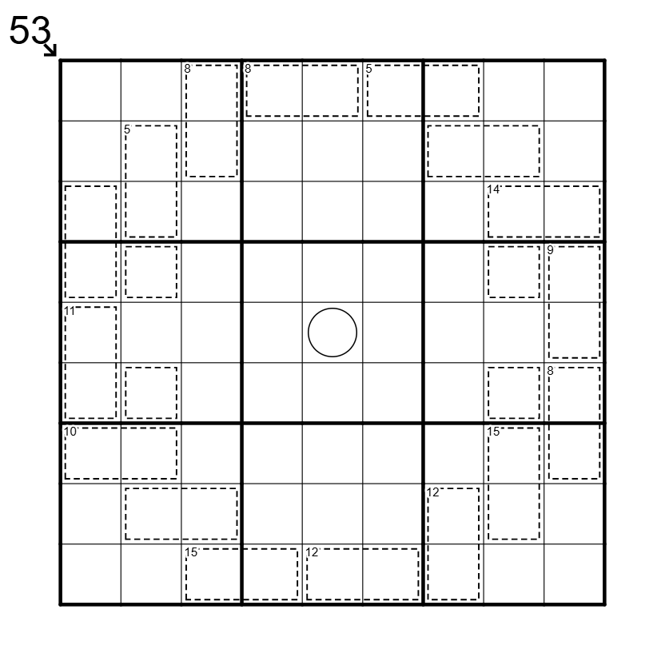

Panopticon - ⭐️⭐️⭐️

LINK
REGELS:
- Standaard sudoku: Plaats de cijfers van 1 t/m 9 eenmaal in elke rij, kolom, en 3x3 blok.
- Killer cage: Cijfers in een kooi herhalen zich niet, en sommen tot het getal dat linksboven in de kooi staat (als dat gegeven is).
- Little Killer: Het getal bij een pijl buiten de puzzel is gelijk aan de som van de cijfers in de richting van de pijl.
- Custom: Het cijfer in de cirkel in het midden van de puzzel 'ziet' alle killer kooien. Dit betekent dat het cijfer dat in deze cirkel staat in geen enkele killer kooi mag voorkomen.